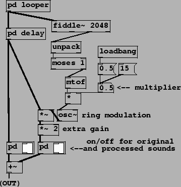
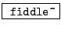

As suggested in Section 5.2, when considering the result of
modulating a complex harmonic (i.e., periodic) signal by a sinusoid, an
interesting special case is to set the carrier oscillator to  the
fundamental frequency, which drops the resulting sound an octave with only
a relatively small deformation of the spectral envelope. Another is to
modulate by a sinusoid at several times the fundamental frequency, which
in effect displaces the spectral envelope without changing the fundamental
frequency of the result. This is demonstrated in Example E03.octave.divider.pd (Figure
5.10). The signal we process here is a recorded, spoken voice.
the
fundamental frequency, which drops the resulting sound an octave with only
a relatively small deformation of the spectral envelope. Another is to
modulate by a sinusoid at several times the fundamental frequency, which
in effect displaces the spectral envelope without changing the fundamental
frequency of the result. This is demonstrated in Example E03.octave.divider.pd (Figure
5.10). The signal we process here is a recorded, spoken voice.
|  |
The subpatches pd looper and pd delay hide details. The first is a looping sampler as introduced in Chapter 2. The second is a delay of 1024 samples, which uses objects that are introduced later in Chapter 7. We will introduce one object class here:
:
pitch tracker. The inlet takes a signal to analyze, and messages to
change settings. Depending on its creation arguments fiddle~may have a
variable number of outlets offering various information about the input
signal. As shown here, with only one creation argument to specify window size,
the third outlet attempts to report the pitch of the input, and the amplitude
of that portion of the input which repeats (at least approximately) at the
reported pitch. These are output as a list of two numbers. The pitch, which
is in MIDI units, is reported as zero if none could be identified.
In this patch the third outlet is unpacked into its pitch and amplitude
components, and the pitch component is filtered by the moses object so that
only successful pitch estimates (nonzero ones) are used. These are
converted to units of frequency by the mtof object. Finally, the frequency
estimates are either reduced by  or else multiplied by 15, depending on
the selected multiplier, to provide the modulation frequency. In the first
case we get an octave divider, and in the second, additional high harmonics
that deform the vowels.
or else multiplied by 15, depending on
the selected multiplier, to provide the modulation frequency. In the first
case we get an octave divider, and in the second, additional high harmonics
that deform the vowels.